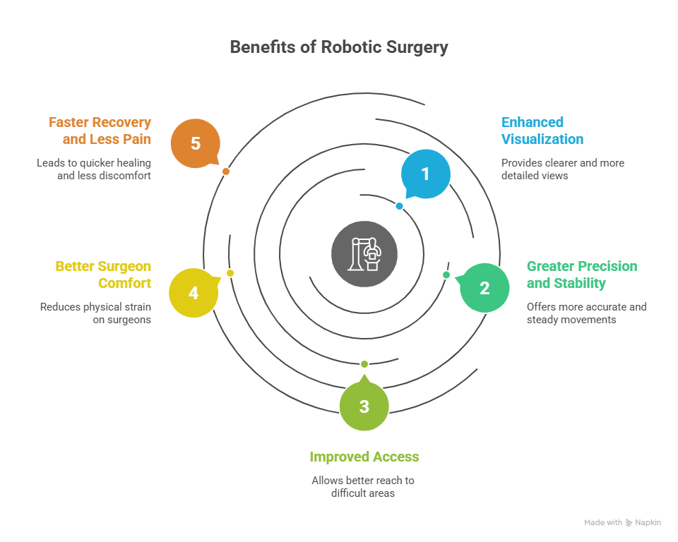
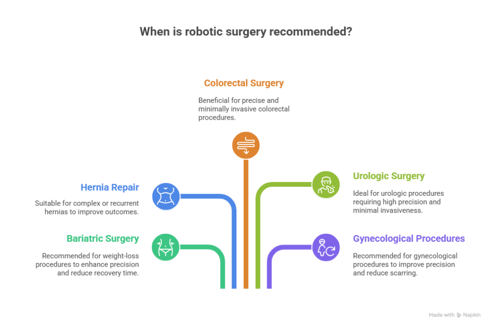

Minimally invasive surgery has changed how doctors perform complex operations. Instead of large cuts, surgeons now use small incisions, leading to faster recovery and less pain. Among these advanced techniques, two have become very popular—laparoscopic surgery and robotic surgery. Both aim to minimize trauma to the body, but they differ in how they are performed and the technology used.
So, the question many patients ask is — “Is robotic surgery better than laparoscopic?” Let’s understand both methods in detail and see how they compare.
Is Robotic Surgery Better than Laparoscopic?
So, the question many patients ask is — “Is robotic surgery better than laparoscopic?” Let’s understand both methods in detail and see how they compare.
Book Your Appointment TodayUnderstanding Laparoscopic Surgery
Laparoscopic surgery, often called “keyhole surgery,” involves making small incisions through which a thin tube with a camera (laparoscope) and surgical instruments is inserted. The surgeon views the internal organs on a monitor and operates by hand, manipulating the instruments directly.
This method was revolutionary when it was introduced because it replaced large incisions with smaller ones, reducing recovery time and hospital stay. Laparoscopic surgery is widely used for procedures such as gallbladder removal, hernia repair, bariatric surgery, and appendectomy.
Advantages of Laparoscopic Surgery:
- Smaller incisions and less visible scarring
- Reduced postoperative pain
- Shorter hospital stay
- Faster recovery compared to open surgery
- Lower risk of infection
However, laparoscopic surgery also has some limitations. The surgeon’s instruments are rigid and can move only in limited directions. The surgeon’s vision is two-dimensional, which can make complex procedures challenging. This is where robotic surgery brings innovation.
Understanding Robotic Surgery
Robotic surgery is the next step in minimally invasive technology. In this technique, the surgeon controls robotic arms through a computer console. The robot mimics the surgeon’s hand movements with extreme precision and provides a 3D, high-definition view of the surgical site.
The robotic system filters out natural hand tremors, allowing for smoother and more accurate movements. Dr. Atul Peter’s, is the Best Robotic Surgeon in Delhi, uses advanced robotic platforms for complex procedures, especially in bariatric and hernia surgeries, offering patients improved precision and outcomes.
Advantages of Robotic Surgery:
- Greater precision and control
- 3D visualization of internal structures
- Ability to access hard-to-reach areas
- Minimal blood loss
- Quicker recovery time
- Reduced postoperative pain
Key Differences Between Robotic and Laparoscopic Surgery
When comparing robotic surgery vs laparoscopic surgery, both share the same goal: to perform surgeries with minimal trauma to the body. However, the technology and control mechanisms differ significantly.
| Aspect | Laparoscopic Surgery | Robotic Surgery |
|---|---|---|
| Control | Surgeon directly controls instruments by hand. | Robotic arms are controlled by the surgeon through a console. |
| Vision | 2D video view from the laparoscope. | 3D, high-definition vision with depth perception. |
| Precision | Limited by human hand stability and tremors. | Enhanced by robotic arms that filter tremors for smooth motion. |
| Flexibility | Rigid instruments with limited range of motion. | Instruments move in multiple directions with wrist-like flexibility. |
| Ergonomics | Surgeon stands for long periods, leading to fatigue. | Surgeon operates while seated at a console, improving comfort and focus. |
| Cost | More affordable and widely available. | Higher cost due to advanced robotic systems and maintenance. |
| Learning Curve | Commonly practiced with standard training. | Requires specialized training and certification for robotic systems. |
How Robotic Surgery Works
Robotic surgery is performed using a robotic system that consists of three main components:
- Surgeon Console:
The surgeon sits at this console and controls the robotic arms using hand and foot controls. - Patient-side Cart:
This part holds the robotic arms and surgical instruments that perform the actual surgery. - Vision Tower:
It provides high-definition, magnified 3D images of the surgical site.
Every movement made by the surgeon is precisely translated into real-time robotic movements, ensuring extreme accuracy. The robot cannot move on its own—it only responds to the surgeon’s commands.
Advantages of Robotic Surgery Over Laparoscopic Surgery

The major benefit of robotic surgery lies in its precision, flexibility, and visualization. Here’s why many surgeons and patients consider robotic surgery superior in certain cases:
1. Enhanced Visualization
Robotic systems provide a 3D magnified view, helping surgeons see even tiny structures like nerves and blood vessels clearly. This is a huge improvement over the 2D view of traditional laparoscopy.
2. Greater Precision and Stability
The robotic arms can make highly controlled movements without tremors. This precision reduces tissue damage and improves surgical outcomes.
3. Improved Access
Robotic instruments can rotate 360 degrees and move in directions that the human hand cannot. This allows access to difficult anatomical areas, making complex surgeries easier and safer.
4. Better Surgeon Comfort
Unlike traditional laparoscopy, where surgeons must stand for long hours, robotic surgery allows them to operate from a console in a comfortable seated position. This reduces fatigue and improves focus.
5. Faster Recovery and Less Pain
Due to smaller incisions and minimal tissue damage, patients experience less postoperative pain, fewer complications, and quicker recovery times.
When Laparoscopic Surgery is Still a Good Choice
While robotic surgery offers many benefits, laparoscopic surgery is still a great choice for many procedures. It remains more cost-effective and is widely available. For simpler surgeries that don’t require high precision or access to complex areas, laparoscopy works perfectly well.
For example, standard gallbladder removal or appendectomy can be effectively performed through laparoscopy. The technology required for robotic surgery is not necessary for these straightforward cases.
When Robotic Surgery is Recommended

Robotic surgery is particularly beneficial for:
- Bariatric Surgery (Weight-loss procedures)
- Hernia Repair (especially complex or recurrent hernias)
- Colorectal Surgery
- Urologic Surgery
- Gynecological Procedures
For patients requiring high precision or those who have undergone previous surgeries leading to scarring, robotic systems can offer better visualization and control.
Many patients in Delhi prefer robotic procedures because of the expertise offered by specialists like Dr. Atul Peter’s, who is recognized as the Best Robotic Surgeon in Delhi.
Risks and Limitations
Both laparoscopic and robotic surgeries are safe when performed by experienced surgeons. However, like any medical procedure, they carry certain risks such as:
- Bleeding
- Infection
- Adverse reaction to anesthesia
- Technical issues (rare in robotic systems)
One of the main limitations of robotic surgery is cost. The robotic systems and instruments are expensive, making the procedure costlier than laparoscopy. However, many patients find the faster recovery and reduced complications to be worth the cost.
Comparing Outcomes
Studies have shown that robotic surgery often leads to:
- Less blood loss during surgery
- Fewer complications
- Shorter hospital stays
- Quicker return to normal activities
However, the success of any surgery depends largely on the skill and experience of the surgeon, rather than just the technology used. The best outcomes come from choosing a skilled and experienced surgeon who can determine which approach is most suitable for your condition.
Is Robotic Surgery Better than Laparoscopic?
So, the question many patients ask is — “Is robotic surgery better than laparoscopic?” Let’s understand both methods in detail and see how they compare.
Book Your Appointment TodayHow to Choose Between Robotic and Laparoscopic Surgery
Here are a few points to consider when deciding between the two:
- Type of Surgery:
Complex surgeries often benefit from robotic precision, while simpler ones may be suitable for laparoscopy. - Surgeon’s Experience:
Always choose a surgeon experienced in both techniques. They can guide you toward the best option for your case. - Cost and Availability:
Robotic surgeries are more expensive and may not be available in all hospitals. - Recovery Expectations:
Robotic surgery may offer a faster recovery, but both options are minimally invasive and generally safe.
Conclusion
So, is robotic surgery better than laparoscopic? The answer depends on the type of surgery, the complexity of the case, and the surgeon’s skill. Robotic surgery offers superior precision, flexibility, and vision, making it ideal for complex or delicate operations. However, laparoscopic surgery remains an excellent and cost-effective option for many routine procedures.
Both approaches share the same goal—improving patient safety, minimizing pain, and ensuring a faster recovery. The choice ultimately depends on what’s best for the individual patient, guided by an experienced surgeon like Dr. Atul Peter’s.
Frequently Asked Questions
Is Robotic Surgery safer than Laparoscopic Surgery?
Is Robotic Surgery better than Laparoscopic Surgery for all cases?
How long is the recovery after Robotic Surgery?
Is Robotic Surgery more expensive?
How do I know which type of surgery is right for me?
Recommended Further Reading
Have Personal Health Questions?
Consult with Dr. Atul Peters and our expert multidisciplinary team at Max Smart Super Speciality Hospital, Saket, New Delhi.
Book Your Consultation